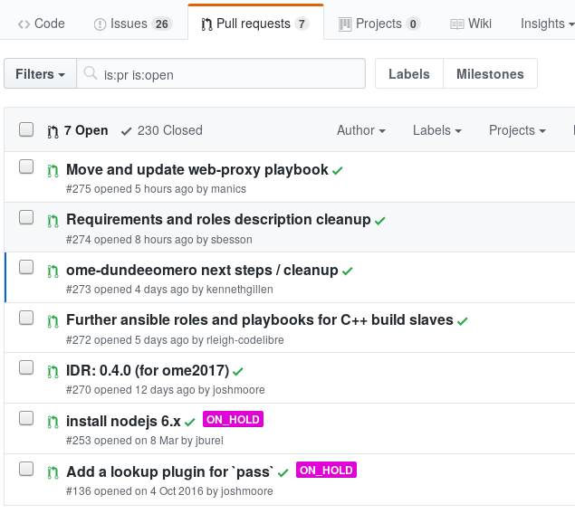
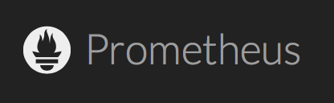

Engineering the IDR
(And how you can too)
Simon Li
Aims of this talk
- Explain how the IDR systems are deployed and managed
- Show how to automate a large scale OMERO system
- Introduce the principles and resources we use
Discussion
The Image Data Repository
Behind the scenes
- 98 TB raw data
- 15 million files
- 19 million annotations
Overview of the current IDR


- 7 virtual machines
- 76 vCPUs
- 296 GB RAM
- 2 TB volatile storage

How do we do this?
....
IDR: Three key concepts
- Configuration Management
- Resource virtualisation
- Develop-Test-Release new datasets
Configuration management
What is configuration management?
- A systematic way to setup and configure your servers
- "Infrastructure as code"
"Infrastructure as code"
- Reproducible installations
- Documentation
- Version control
- GitHub code reviews


https://github.com/openmicroscopy/ansible-public-omero-example/


What can it do for OMERO?
- Open-source our infrastructure
- Manage all dependencies
- Install, configure, upgrade
- Minimal prerequisites: SSH access (WinRM for Windows)
- Relatively easy to get started
- Written in Python
Ansible roles
“the Ansible way of bundling automation content and making it reusable”
All-in-one OMERO
# inventory
[all]
omero-allinone ansible_host=192.168.1.1
All-in-one OMERO
# playbook.yml
- hosts: omero-allinone
roles:
- role: openmicroscopy.postgresql
- role: openmicroscopy.omero-server
- role: openmicroscopy.omero-web
vars:
postgresql_users_databases:
- user: omero
password: omero
databases: [omero]
postgresql_version: "9.6"
ansible-playbook -i inventory playbook.yml
Scaling up: Separate database node
# inventory
[all]
omero-database ansible_host=192.168.1.1
omero-server ansible_host=192.168.1.2
Scaling up: Separate database node
# playbook.yml
- hosts: omero-database
roles:
- role: openmicroscopy.postgresql
- hosts: omero-server
roles:
- role: openmicroscopy.omero-server
- role: openmicroscopy.omero-web
Scaling up: Separate database node
# playbook.yml
- hosts: omero-database
...
vars:
postgresql_server_listen: "'*'"
postgresql_server_auth:
- database: omero
user: omero
address: 0.0.0.0/0
postgresql_users_databases:
- user: omero
password: omero
databases: [omero]
postgresql_version: "9.6"
- hosts: omero-server
...
vars:
omero_server_dbhost: "{{ hostvars['omero-database'].ansible_eth0.ipv4.address }}"
ansible-playbook -i inventory playbook.yml
Public OMERO.web configuration
omero_web_config_set:
omero.web.public.enabled: True
omero.web.public.server_id: 1
omero.web.public.user: public
omero.web.public.password: password
omero.web.public.url_filter: "^/(webadmin/myphoto/|webclient/(?!(action|logout|annotate_(file|tags|comment|rating|map)|script_ui|ome_tiff|figure_script))|webgateway/(?!(archived_files|download_as)))"
IDR Performance tuning
- OMERO.server: Bio-Formats cache
- OMERO.web: Optimise queries and HTTP requests
- Nginx: Very aggressive front-end caching
IDR: Deployment and configuration
Virtualisation
- Open-source cloud platform
- Abstract view of compute resources
- Manage resources programmatically
- We're using the OpenStack deployment at EMBL-EBI
Volumes and Snapshots
IDR: Deployed with one script
- Provision storage, compute and network resources on OpenStack:
- Install and configure all IDR components:
Current EBI deployments
Summary so far
- Automatically installed and configured OMERO
- Split across multiple servers
- Automatically provisioned virtual machines and storage
- Deployed multiple copies of the IDR
What next for the IDR?
Horizontal scaling (in progress)
Monitoring system

OMERO has initial multi-server read-only support (thanks to Glencoe Software, Harvard Medical School, OHSU)
Multiple ways of deploying OMERO
- Physical servers
- On cloud E.g. OpenStack, AWS, Google Cloud, Azure, VMWare
- Docker
- ...
But we can use same Ansible roles all the above
Recap
- OME Ansible roles
- https://galaxy.ansible.com/openmicroscopy
- Example OMERO.server playbook
- https://github.com/openmicroscopy/ansible-public-omero-example
- IDR Deployment playbooks and configuration
- https://github.com/IDR/deployment
Discussion: We can talk about anything
Virtualised OMERO
Your experiences of configuration management
Docker for running services or computational analysis
New technologies you think we should look at
Infrastructure for high content analysis workflows
....
Thank you
- Prof. Jason Swedlow
- OME team
- IDR team